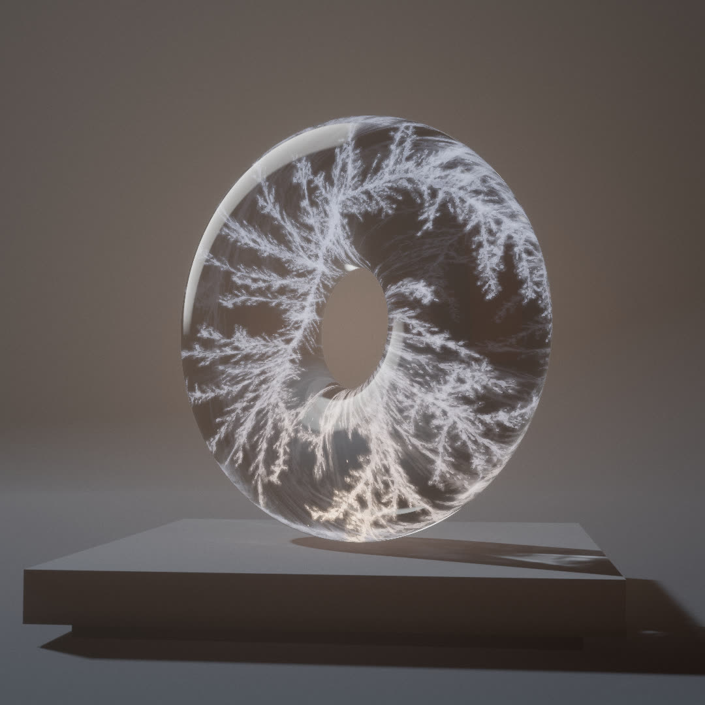

How Bolt strikes glass
A clear glass object stands on a concrete slab in a grey studio. Click it and charge gathers where you clicked, crawling over the glass in arcs; a bolt comes down; and the discharge runs out through the glass, leaving a Lichtenberg figure frozen in it, lit warm from a lamp in the slab. Here is how the glass is traced, how the figure is grown and revealed, how the light gets through and round it, and how the lightning is drawn.
See it live
A discharge, frozen
Fire an electron beam into a block of acrylic and the charge stays trapped inside it. Tap the block with a grounded point and the charge leaves all at once, in a few nanoseconds, melting a branching tree of channels on its way to the point: a Lichtenberg figure. The sketch tells a version of that story with lightning. The charge gathers where the visitor clicks, a bolt comes down from above the frame and strikes there, and the figure runs out through the glass from that spot. It glows blue for a moment and then is white fractures, lit from behind by a cool key and from below by a warm lamp set into the slab.
Everything about the glass is computed per pixel from a distance field: there is no glass mesh. The figure is grown on the CPU in a worker and handed to the GPU as two 3D textures. The bolt is a few hundred camera-facing cards drawn into a buffer of its own. The page is the shared photographic pipeline (studio, soft shadows, AO, GI, AgX) with one full-screen pass of the day's own laid over its lit frame, through the pipeline's composite hook.
C clears the figure, R brings another shape (never the same one), S strikes somewhere visible.Glass that is only a distance
Each shape is a signed distance function: negative inside, positive outside, and its magnitude a safe step. For every pixel, the camera ray is taken into the object's own space (its pose is a turn about the vertical and a scale of 1.15), clipped to the field's box of ±1.12 less one cell, and sphere-traced: step forward by the distance to the surface, which can never overshoot it, and repeat, at most 96 times, until the distance is under 0.0015. A ray that misses but came within a pixel's angle of the surface still covers part of the pixel, and that part shows the room mirrored, as glass does at grazing angles; that is the silhouette's antialiasing.
At the hit, the normal is the field's gradient, by central differences. The ray splits by Fresnel (Schlick's approximation, f₀ = ((n − 1)/(n + 1))², 4% at the default index of 1.5): the reflected share shows the studio's environment map, and the rest is refracted in. Inside, the ray crosses the glass (through the figure, if there is one; next sections) and meets the far side, where it splits again. What leaves is bent out and shows whatever is behind: the lit frame of the pipeline, looked up at the point 1.5 units along the bent ray, or the environment where that is off screen. What stays in, when it is more than 3% of it, is reflected and crosses the object a second time before leaving whichever way it can. That second crossing is where a block's mirrored copies of its own figure come from, and why a sphere shows a second, smaller figure in its lower half.
Light crossing glass is absorbed a little by distance, more in red than blue: exp(−(0.1, 0.06, 0.05) · path), so thick glass goes faintly green-blue, as real soda-lime glass does.
A ray through the glass
A slice through the shape, the eye on the left. The circles are the sphere-tracing steps: each is as big as the distance field says is empty, so the ray never steps through the surface. At the hit the ray splits: a reflection (its share by Fresnel), the refracted ray in, and at the far side the light that leaves and the light reflected back for a second crossing, each drawn as bright as its share. Push the ray toward the edge to see the second crossing take over, and raise the index to see total internal reflection trap it.
The shapes come in two kinds. Nine are exact functions, evaluated in the shader as they are in JavaScript: a sphere of radius 0.9, a rounded box for the block (0.6 × 0.72 × 0.42 half-extents) and the cube (0.56), rounded cylinders for the cylinder and the two parts of the bottle (blended by a smooth minimum of 0.25), a torus standing on its rim (ring radius 0.6, tube 0.33), and three polyhedra cut by pairs of planes. A grid of trilinear samples cannot hold a crease (a polyhedron traced from one has wavy edges and dimpled faces), so the polyhedra are always computed exactly. Their edges are rounded by a soft maximum over all of their planes at once:
Folding a two-way smooth maximum over the planes one by one rounds each edge well but leaves creases round a vertex, where five faces meet and the order of the folds shows; the log-sum-exp treats them all alike. Octahedron (four plane pairs at 0.566), dodecahedron (six at 0.72) and icosahedron (ten at 0.74) all take the panel's Edges and Inflate, as do the block and the cube.
Suzanne has no formula. She comes from the 96³ grid day 7 baked from Blender's mesh, as half floats (1.7 MB), cell size 2.24 / 96 = 0.0233. The grid stores her nose down, so on load she is resampled into a new grid turned −0.37 radians about x, as day 7 does: tilted back, she sits on her chin and looks ahead rather than standing on her nose. Her field is a 3D texture in the shader, read with hardware trilinear filtering; outside its box the distance is at least the distance to the box.
Every shape is also baked to a 96³ grid on the CPU, whatever its kind. The grid is what the click is found in (the same sphere trace, in JavaScript), what the figure grows in, what the plinth's shadows are walked through, and what the charge's arcs are put back onto. The lowest inside cell gives the object's foot, which is lifted onto the slab.
A tree that goes looking for charge
A real Lichtenberg figure is a dielectric breakdown: the channel grows where the field across its tip is strongest, which is where the most charge is still waiting nearby. The worker grows it the way plants are often grown in graphics, by space colonisation (Runions et al.), which has the same economy: charge is scattered through the glass as points, each point pulls the node of the tree nearest to it, and a point is spent once a branch comes within reach of it. The tree stops when it has been everywhere, and its branches end up about one spacing apart wherever they are: the whole volume, with clear glass between.
The panel's Density sets how many points the object holds, 120 + 560 × density (400 at the default), which is about how many branches the figure ends up with. The spacing follows from the volume, ∛(volume / points), so a small object is no busier than a large one: about 0.2 units in the sphere.
The points come in two lots. A sparse lot first, on a grid 2.6 times the spacing, which draws a few long fronds right across the object; then, once those are grown, a fine lot on the spacing itself, which the fronds answer with side branches all along their length. That order is what gives the figure its hierarchy, and the hierarchy is what keeps a dense one legible. A point is placed at random in each grid cell if that is inside the glass, at least 0.05 in where the glass is thick, and (half of them) anywhere past 0.006 where it is thin, so that thin parts such as Suzanne's ears, at most 0.024 thick, get some.
Each round, every point still waiting adds its unit direction to its nearest node's pull. Each pulled node grows one step of 0.034 toward the sum, plus two terms of the day's own. FAN = 0.7 pushes it away from the entry, as the field would push the discharge, so the fronds fan out from where the bolt went in, side by side, as they do in the photographs. And Wander adds a random vector of up to 1.4 × wander, from straight frost to gnarled. A node pulled evenly both ways (a sum shorter than 0.25) would dither on the spot and is skipped, a node that has forked three times has done its part, and a step that would leave the glass is pushed back inside along the surface's gradient, so a branch can follow a thin part instead of dying at it. A round where nothing can move lets the stuck points go. The growth stops at 400 rounds per lot, 9,000 nodes or two seconds, since a bolt is waiting on it.
Space colonisation, in a slice
The same algorithm in a 2D disc, the entry at the top left. The sparse lot of points (larger) is grown first and draws the long fronds; the fine lot then fills in side branches. Points fade as they are spent. Set fan to 0 to see plain space colonisation, which grows toward the nearest charge in every direction; with fan the fronds run away from the entry and lie side by side. "Straighten" and "hairs" are the two passes made before drawing, below.
Two passes shape the tree before it is drawn. The lattice of short steps wiggles, where a crack runs straight and kinks. So only some nodes keep their place: the forks, the tips and every fifth node along a run; the ones between are put on the straight line between those. Then each piece's thickness is set by how much of the tree it feeds: its radius is 0.6 + 1.4 · √(feeds / nodes) voxels, so the trunk out of the entry is the thickest and the tips are hairlines.
The feathering in the photographs is a fuzz of hairline cracks on every branch. Each piece gets three: from a random point along it, raked forward the way the discharge went (0.6 to 1.2 of the piece's direction) and set round it at a random roll like a bottle brush, so a frond is feathered from wherever it is seen. A hair is 0.4 to 1.3 steps long plus seven times the piece's share, longest off the main branches, and 0.55 voxels thick: anything thinner falls between the texture's samples. The hairs stop at three seconds, half the growth's budget again.
A field of distances to the channels
The tree goes to the GPU as a T³ grid of bytes, T = 320 on desktops (32.8 MB), 288 on phones and 192 at the low tier. Each piece is drawn into it as a capsule, but what a voxel stores is not whether it is in the channel: it is the distance to the channel's wall, within BAND = 3 voxels either way, as 0.5 + (r − d) / 6, clamped and scaled to a byte, keeping the larger value where pieces overlap. Read back, that is a distance field of its own, negative inside a channel and known out to three voxels (0.021 units at T = 320). The glass shader sphere-traces it like the glass itself: through clear glass the march strides by what the field says is clear, up to three of its base step of 0.012, and slows to half a voxel only beside a channel. That is how a figure of thousands of hairline branches is marched without missing them.
Beside that grid the worker writes a second, at half the resolution (160³ at T = 320, 4.1 MB): when the discharge reaches each place. Every node's distance along the tree from the entry is summed down the tree; each voxel near a channel takes the arrival of the nearest piece, interpolated along it, scaled so the farthest tip is at 0.94 of a byte's range; a hair arrives a moment after the point it leaves. It is read with nearest filtering, since a blend between two branches' arrivals would be neither.
The discharge running out
The tree from the figure above, revealed by its arrival times. The front runs out over 1.1 s, fast at first and slowing as it spreads (1 − (1 − t / 1.1)^1.8), white-hot and blue where it has just arrived and cooling behind it. Played slower than life by the factor on the slider.
Shattered glass, lit from behind and below
A channel in a real figure is not a clean tube: it is a run of shattered glass, a hard core in a haze of finer cracks, and the core's wall is broken into facets that each catch the light their own way. The march draws both as it crosses the field.
1 − exp(−close² · grain³ · 0.22 · step / voxel), where close rises toward the wall and grain is value noise at 0.7 voxels: many fine cracks rather than a glow. It passes 20% less light behind it for every bit it adds.(R·L)²⁰ toward the key. Opacity 0.3 at the skin to 0.92 a voxel and a half deep.(1, 0.62, 0.3) × 4 × the panel's Lamp (0.6), falling off as 1 / (0.03 + d²): the hot spot low in the glass, and more where a chip faces it.(0.3, 0.55, 1) to a deep (0.12, 0.25, 1) as it fades, and lights the slab.The key comes from behind and to the left ((−0.8, 0.65, −0.45)), tinted cool, so from the default camera the figure is backlit against the dark of the glass, as in the photographs of acrylic blocks on a light box. The lamp is the warm counterpart from below. The real objects are often shown on lit stands, and this is what gives the figure the warm-and-cool look of the reference the day was aimed at.
Rays traced in a vertex shader
Glass on a lit floor throws a bright, focused pool where it gathers the light and a dark shadow round it. The pipeline's shadow map knows nothing of glass (there is no glass mesh), so the day traces its own light. A square grid of rays leaves the key, 512 × 512 of them on desktops (384² on phones, 256² at low), jittered in their cells so they do not land in rings and moiré, over a square ±1.25 of the object's units across. Each ray is one vertex of a Points draw, and its vertex shader does the whole trace: sphere-trace to the glass, refract in, cross, and at the far side refract out, or, where the angle is too steep to leave, reflect back in and cross again, up to three times. Its Fresnel losses go into its weight. Then it lands on a level plane, and the vertex is placed in clip space at that point of a map of the plane.
Each landing is a 5-pixel splat with a Gaussian exp(−4r²), added. Its weight is the share of the beam the ray stands for over the area of a texel, divided by the splat's own total of 4.9, so the map holds irradiance in units of the key's: 1 in the open, more where the glass focuses, less where it spreads. Two maps are made, for the slab's top and the floor, 768² each, centred where the ray through the object's centre lands; the slab's top blocks rays on their way to the floor. A separable 9-texel Gaussian blur takes off the grain of a quarter of a million jittered rays.
Once struck, each ray is also walked along the figure's own field as it crosses, striding over clear glass by the field's distance, and loses half its light at every channel it meets: the channels scatter it, to nowhere in particular. So a struck object throws its figure's shadow into its caustic, branch by branch. The maps are redrawn whenever anything they depend on changes: the shape, its turn (so every frame while it spins), the figure and the index of refraction.
The slab and the floor read them in their own shading, through the pipeline's surface() hook. The key's light that would have come straight through the glass is taken away first. The key's ray from the point is walked through the object's field, 44 steps of 0.06, and the thickness of glass it crosses turns into a shadow. Then the map's light is added back, albedo · key · map / π, on up-facing surfaces.
A slice of the caustic
Parallel rays from the key fall through a glass disc standing on the floor. Below, the irradiance their splats pile up, against 1 for unobstructed light (dashed). The disc focuses the light it catches into a bright line inside a dark shadow; when struck, every channel a ray crosses takes half of it, and the pool turns mottled.
A grey studio with a haze in it
The object stands on a slab of cast concrete 2.4 units square and 0.22 high, about as wide as the glass, on a darker recessed foot 2.1 square and 0.08 high, on a seamless cyc: a floor disc of radius 9 that sweeps up into a round wall over a quarter circle of radius 4. The studio has the cool key behind and to the left (intensity 6, a soft box 0.5 wide) and a warm fill (#ff9850 at 0.2) from the other side, so the room goes warm to the right and cool to the left without either wall being painted.
The concrete is mottled by four octaves of value noise, each on a lattice turned and offset from the last (mat3 rotation, ×2.13, +7.31) so that no grid shows through, at ±10% of the albedo; a fine grain of ±4%; and sparse pits at 35% darker. The roughness follows the mottle.
Since the glass's shadow is computed by the receivers themselves (above), their shadow value is overridden, and that also throws away the pipeline's own shadow of the slab on the floor. The floor puts it back from the slab's boxes: a soft shadow traced through their distance field toward the key, the darkest of h / (0.12 t) over 32 steps, the classic trick in which a ray that passes close to an occluder far away is in its penumbra.
The air has a little haze, laid over the frame in the glass pass: the room's light scattered toward the eye along the way, mix(colour, environment · 0.12, 1 − exp(−0.03 · distance)), measured to the glass where it is hit (it is not in the depth buffer) and to the room beyond it where not. The figure's light scatters too, as a halo round the glass. The halo is the integral along the ray of a light falling off as one over distance squared, (atan((d − t꜀)/h) + atan(t꜀/h)) / h, where h is how close the ray passes to the object's centre. A point light there peaks without limit as h goes to 0, which showed as a glowing ball inside a torus's hole, where nothing hides the centre. The light comes from all of the figure, so the source is taken as half a unit across: h = √(h² + 0.25).
The halo across the object
The in-scattered light along a line through the object's centre, 5.6 units from the camera, for a point source (dashed, clamped only at 0.05) and for a source of the size on the slider. At 0.5 the peak is a gentle swell; as a point it spikes wherever the centre can be seen.
A plasma ball where it will land
For 1.1 seconds before the bolt, and for as long after as the figure takes to grow, the charge gathers where the visitor clicked. It is drawn as the filaments of a plasma ball: each one leaves the impact and bows out through the air in an arc of a circle to a spot on the glass nearby, and that spot wanders, so the arc sweeps round with it.
There are up to twelve, each with its own angle round the impact, two phases and speeds for its wandering, a bulge and a reach. As the charge grows, 3 + 9 × charge of them are drawn, reaching further: the landing is (0.07 + 0.22 × charge) × reach from the impact (reach 0.6 to 1.2, breathing by a quarter), at an angle that drifts by 0.9 sin(ω₁t + φ₁) + 0.4 sin(ω₂t + φ₂), with ω₁ from 0.6 to 1.8 and ω₂ from 1.3 to 3.3 radians a second. The landing is put back on the glass: four Newton steps in the baked grid along its gradient, lifted 0.004 units off it. Its normal there and the normal at the impact, summed, say which way is out.
The arc is a true arc of a circle through the impact and the landing, bowed out by a sagitta of 0.3 to 0.65 of its chord (shimmering by ±10%): the circle's radius is (L²/4 + h²)/2h and the points are its start vector turned toward the end about the circle's axis, in 40 pieces. Along it run two ripples, one each way across, L · (0.07 sin(15s − 26t) + 0.02 sin(37s + 37t)), faded to nothing at both ends so the start and landing stay put. Each piece flickers every 25 ms; the ends are brighter (0.55 + 0.45 max(1 − 4s, s²)); a spot of light marks each landing and a corona the impact. The whole set is rebuilt on the CPU every frame, about 500 pieces.
The arcs light the room: a blue lamp at the impact, flickering, at 5 × charge, and the bloom rises by 0.12 × charge. When the stroke lands they flare to 2.5 times and die away over about half a second (2.5 e^(−t/0.22)), so the charge runs on into the strike rather than being cut off.
Filaments over the glass
In section: the glass's surface, the impact at its top, and the filaments from it, each an arc of a circle bowed out from the glass to a landing that wanders round the impact. "Grow" plays the 1.1 s of charge on a loop. Without ripples the arcs are clean bows; with them, waves run along each one, and pass through each other.
A channel jagged at every scale
The channel starts 6.5 units above the impact, up to a unit to either side and toward the back, and comes down to it by midpoint displacement: each piece's midpoint is pushed off its chord, across it, by a share of its length, and the two halves are displaced in turn, seven times, for 128 pieces. The share is 0.1 for the first two levels and 0.28 after, so the channel comes down more or less straight and wanders in the small scales, which is how lightning looks: the same jaggedness at every size below a certain one.
Eight to twelve branches leave it, four of them in the lower part of the channel that the frame shows. Each grows downward and outward (a direction turned 0.4 to 1 radian off the channel, and never climbing) for up to 2.8 units, displaced the same way, thinning to half and dimming to 30% toward its tip, and forking again at 11% of its points (7% a level down, two levels at most). Every piece records when the leader reaches it (its share of the way down, a branch arriving later as it grows as fast as the leader does), how far up the channel it is, its width and its brightness at each end.
The timing follows lightning's. The leader comes down in 26 steps over 80 ms: the newest step flashes at 2.5, the two behind it at 0.9, decaying in 45 ms, and what it has laid glows at 0.25. It holds one step short of the glass, pulsing, until the stroke. The return stroke then runs up the channel in 12 ms, a bright front 1.2 · e^(−22|up − wave|) over the channel behind it at 45 times a leader step, lighting each branch as it passes where it leaves. One to three restrikes follow down the same channel, 40 to 90 ms apart at 0.3 to 0.8 of the first, each a spike e^(−t/0.022) plus a current that keeps flowing, 0.06 e^(−t/0.1); the branches go dark in about 50 ms. From 30 ms after the last stroke the channel breaks into beads over 150 ms, and 0.4 s after it, it is gone.
The strike, slowed down
The bolt in 2D with the page's timing, played 40 times slower than life (time is in real seconds from the first stroke; before 0 is the leader's dash). "Levels" is how many times the channel was halved and displaced. "Per-piece levels" draws each piece at one brightness, as the page first did: in the dim afterglow neighbouring pieces then step against each other and the channel reads as a chain of sticks. Drawn with brightness and width interpolated from end to end, and any noise taken from the joints' places, they agree where they meet.
Each piece is a card: an instanced quad in screen space, spanning the piece and as wide as its glow. Its fragment shader draws the distance to the segment, so the card is a capsule; it is never seen as a rectangle because every term falls to zero at the card's edge. The glow's radius at each end is a world size (0.14 × width), never less than 14 pixels so the core never falls between pixels, and is interpolated along the card, as is the brightness. Brightness depends on where along the channel each end is and on a hash of the end's position, so the two cards meeting at a joint agree there.
Inside the card the detail is drawn procedurally, from where along the channel in the world this is, so it runs on across the joints and is sharp at any size: the white-hot core wanders inside its glow by up to 0.11 of the radius (value noise at 12 per unit), a fainter second strand splits off and rejoins (noise at 20 per unit), and the glow is fibrous (±20%, noise at 34). The cards go into a half-float target of their own with MAX blending, not added: where two overlap at a joint the brighter wins, so joints do not glow double. The target holds three things the glass pass colours: the light, the core's share of it (white), and a wide blue glow, which comes out as a saturated blue so that the tone mapper does not turn the halo white.
The bolt lights the room. Three lamps up the channel (just above the glass, 18% and 55% of the way up the channel, strengths 30, 70 and 130 times its light) light the slab and the floor, with the glass's shadow thrown hard away from the channel (26 steps through the field), and the bolt shows in the glass's reflections by how squarely a reflected ray looks at the channel. The air along the channel glows, the first stroke whites the frame out for 40 ms, the frame is pushed up to nearly three times its brightness at the peak, and the bloom rises by up to 0.36.
Three seconds, in order
A strike starts with a click on the glass (the same sphere trace on the CPU finds the point and its normal) or with S, which tries up to 40 points in the visible upper part and takes the highest. The worker is sent the grid, the entry, its normal and a seed, and works to its deadline; the charge gathers for at least 1.1 s and until the figure is ready; the leader dashes down in 80 ms; the stroke lands and the figure starts to run out. Everything after the click runs on scene time, which a pause stops: a strike on its way is called off by a pause, and the worker is replaced rather than left to finish.
The timeline
From the click: charge (filaments and hum), the leader's dash, the strokes' light (log scale, one spike per stroke), the white-out, the figure's growth and its blue afterglow, with the sounds as ticks along the top.
Recordings, scheduled on the strike
Seven CC0 recordings from freesound.org, trimmed and levelled (the long ones to −16 LUFS, the short ones to their peak), about 380 kB in all, are fetched as a loading step and decoded before the first frame, so the first strike never waits for one. They go through one compressor that holds the crack. Variation comes from the unseeded random, so the seeded layout is never shifted by a sound.
| when | what | source |
|---|---|---|
| the charge | A Tesla coil's hum, looped, swelling in 80 ms and rising from 0.85 to 1.15 of its pitch as its low-pass opens from 2.5 to 9 kHz; and snaps of a zap, quicker and louder as the charge gathers, cut off by the stroke. | "S16-18 Tesla coil sparking and humming" by craigsmith; "ELECTRIC_ZAP_001" by JoelAudio |
| the stroke | A close crack (one of two, at ±6% of its pitch), its rumble 0.35 s later through a 900 Hz low-pass, and a snap for each restrike. | "Thunderstorm lightning strike" by foad; "Closeup Thunder Strike 01" by loganzsound; "Thunder Clap And Rumble #9" by Kinoton |
| the figure | Ice crackling while the front runs, fading from 0.66 s as it slows; then four ticks as it cools, 0.4 to 1.8 s apart. | "ice grinding cracking freezing designed" by kyles; "Ice Crack 1" by j_p_higgins |
For a recording the same calls go to an OfflineAudioContext timed by the page's clock, which the recorder steps frame by frame, and the result is rendered to a WAV that is muxed with the frames, so the sound lands on the frame the stroke does.
It strikes itself, and turns to look
Like every day, a page left open keeps showing new things. Each object gets the panel's Change every seconds, 12 by default. If nobody has struck it five seconds before the end (or at 60% of the time, if that is shorter), it strikes itself; and any strike, by hand or not, holds off the next object for at least six seconds, so there is always time to watch the figure form. Any interaction starts the count over. The hold is a small opt-in addition to the shared kiosk module, hold(seconds); days that do not call it are unchanged.
After four seconds with no pointer, wheel or key input, the camera comes round by itself to where the strike shows best: in front of the glass, so the key backlights the figure; low, at a polar angle of 1.63 (looking slightly up at the object); 5.6 units out; and a little to one side, 0.1 to 0.45 radians, a different side for each object. It eases there with a time constant of 1.6 s and then sways, 0.1 radians round and 0.03 up and down, so the glass never sits dead still. Any input hands it back at once. Recordings (?capture) drive their own camera, so it is off there.
What a frame does
The glass pass is the costly one: up to 96 steps to find the glass and up to 320 across it, twice where light stays in, every pixel the object covers. The rest scales with the pipeline's quality tier:
| tier | figure grid | arrival grid | caustic rays | caustic maps |
|---|---|---|---|---|
| high, capture | 320³ · 32.8 MB | 160³ · 4.1 MB | 512² = 262,144 | 2 × 768² |
| medium (phones) | 288³ · 23.9 MB | 144³ · 3.0 MB | 384² = 147,456 | 2 × 512² |
| low | 192³ · 7.1 MB | 96³ · 0.9 MB | 256² = 65,536 | 2 × 384² |
The bolt is at most 2,560 cards, 640 of them kept for the charge's filaments, drawn only while it lasts. The worker's growth and drawing take a few hundred milliseconds on a laptop, inside the 1.1 s the charge takes anyway.